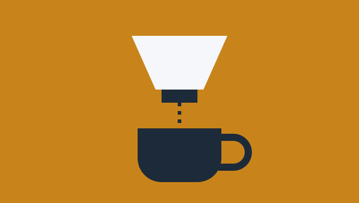

How I Brew at Home
Brewing coffee is really the practice of extraction: hot water pulls flavor compounds out of ground beans, and the goal is to stop at the right moment. Pull too little and the cup tastes sour and thin. Pull too much and it turns bitter and harsh. Every brewing method is simply a different way of controlling that balance, and each one rewards a slightly different kind of attention.

I rotate between four methods depending on my mood and how much time I have. Pour-over is my weekday favorite because it produces a clean, bright cup and lets me taste the character of the beans. The French press is better for slow weekends, since it gives a heavier body and needs very little effort. My AeroPress comes along when I travel, and I turn to cold brew during summer, when I prepare a large batch overnight and enjoy it all week.
Water matters more than most beginners expect, since a cup of coffee is mostly water. If your tap water tastes strongly of chlorine or minerals, your coffee will too. I use filtered water and a simple kitchen timer, and I adjust the grind size a little at a time until the cup tastes balanced. Small, patient changes have taught me more than any expensive piece of equipment.
My Brewing Habits
The chart below shows how many cups I made with each method over a recent week. (This is sample data; replace the numbers in the script with your own.)
Tips That Improved My Coffee
- Weigh the coffee and water instead of guessing with scoops.
- Grind the beans right before brewing.
- Use water just off the boil, around 200°F.
- Change only one variable at a time when experimenting.
- Keep notes so you can repeat the cups you love.
Contact
- Email: you@example.com
- GitHub: github.com/your-username
- LinkedIn: linkedin.com/in/your-profile